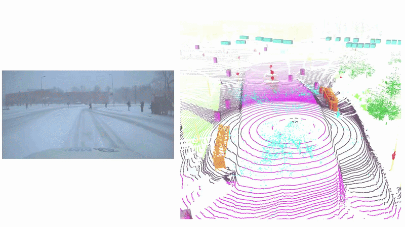
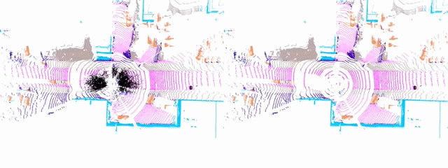
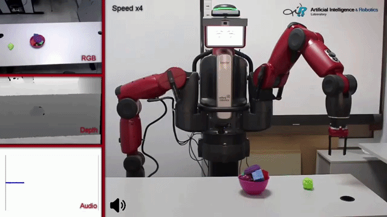
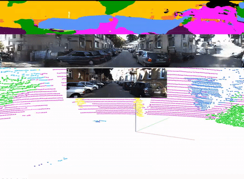
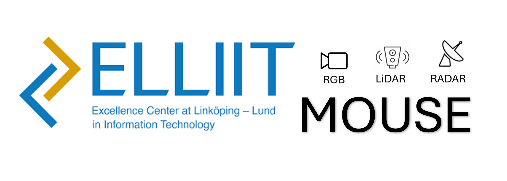
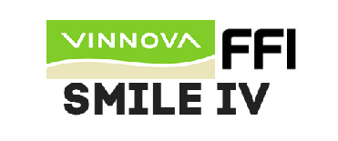
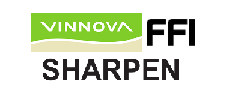

Dr. rer. nat. Eren Erdal Aksoy
Researching on Semantic Scene Perception,
Robot Scene & Action Understanding,
Autonomous Driving, and AI.I am currently an Associate Professor in the RSS group at Lund University, Sweden. Before moving to Lund, I served as an Associate Professor at Halmstad University. Between 2018 and 2021, I was also a visiting scholar in AI research teams at companies such as Volvo Group Trucks Technology and Zenseact AB in Sweden. Prior to moving to Sweden, I spent three years as a postdoctoral research fellow at the Karlsruhe Institute of Technology, where I was a member of the H2T group, led by Prof. Dr. Tamim Asfour. I received my Ph.D. from the University of Göttingen, where I subsequently stayed for 2.5 years as a postdoctoral researcher in the Computational Neuroscience group of Prof. Dr. Florentin Wörgötter. I am actively working on learning semantic representations of visual experiences to improve environment and action understanding in autonomous systems, including robots, intelligent vehicles, and other embodied AI platforms.
News
- 2026.09 We released a new multimodal multitask dataset named Snowy Scenes, with annotations for more than 5K sequential LiDAR scans, including 221K precise bounding boxes for object detection, per-point semantic segmentation, and the labeling of falling snow particles.
- 2026.07 I am serving as an Editor for IEEE ICRA 2027 and as an Associate Editor for IEEE/RAS Humanoids 2026.
- 2026.04 I was the discussion leader for the licentiate defense of Amer Mustajbasic at Chalmers University of Technology.
- 2026.02 I have an open PhD position in my newly funded ELLIIT project MOUSE at Lund University. Click here to apply before March 06!
- 2026.02 I served as an opponent for the defense of doctoral candidate Mahir Gulzar at the University of Tartu in Estonia.
- 2026.02 I am serving as an Associate Editor for IEEE/RSJ IROS 2026.
- 2025.12 I am serving as an Editor for IEEE ICRA 2026.
- 2025.11 I gave an invited talk on "Robust Automated Driving in Extreme Weather" at the ELLIIT Focus Period Symposium in Robot Learning.
- 2025.10 I received an "Outstanding Editor Award" for the ELSP Journal on Robot Learning.
- 2025.09 I was appointed as an Associate Professor in the the RSS group at Lund University.
- 2025.06 We have two IEEE/RSJ IROS papers accepted! The first is on Graph-based Action Recognition while the second is about Unsupervised Point Cloud Denoising!
Selected Publications






Projects

MOUSE: Multimodal Multitask Learning for Reliable Robot Situational Awareness
PI, ELLIIT (with a co-PI (Gustaf Hendeby) from Linköping University)
2026-2030, 2 Partners, 10 M SEK
ROADVIEW: Robust Automated Driving in Extreme Weather
PI & Project coordinator, HORIZON-CL5-2021-D6
2022-2026, 15 Partners, 7 Countries, ~9.7 M Euro

SMILE-IV: Safety Analysis and Verification / Validation of Machine Learning-based Systems
PI, Vinnova-FFI
2023-2026, 5 Partners, 14.4 M SEK

SHARPEN: Scalable Highly Automated Vehicles with Robust Perception
PI, Vinnova-FFI
2019-2022, 5 Partners, 8.8 M SEK
Contact Information
Lund University
Department of Computer Science
Robotics and Semantic Systems
Klas Anshelms väg 10,
Box 118, 221 00 Lund, Sweden
Email: eren.aksoy[at]cs.lth.se